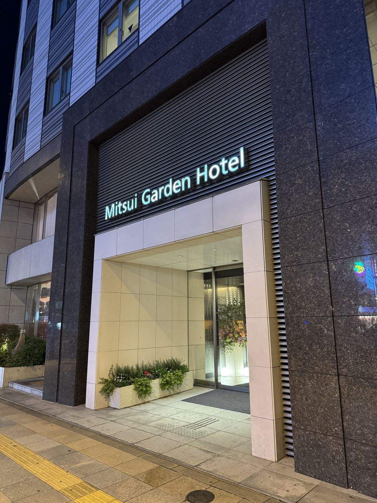
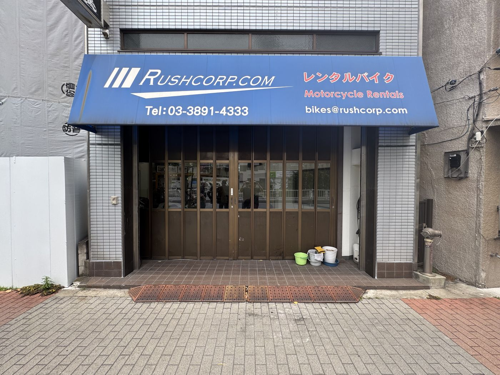
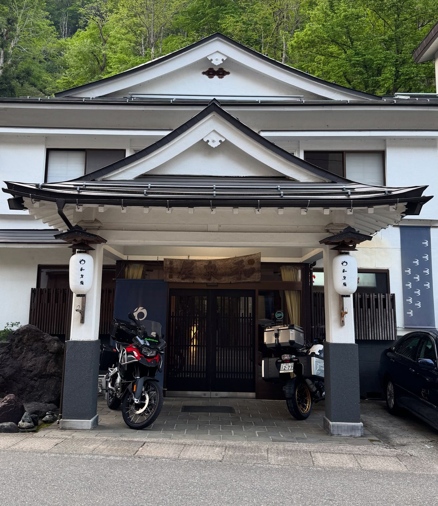
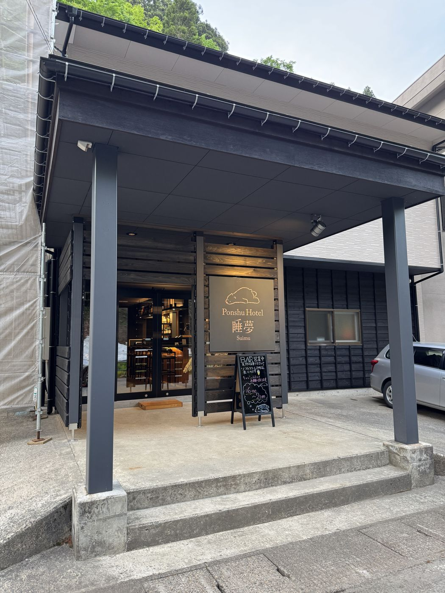
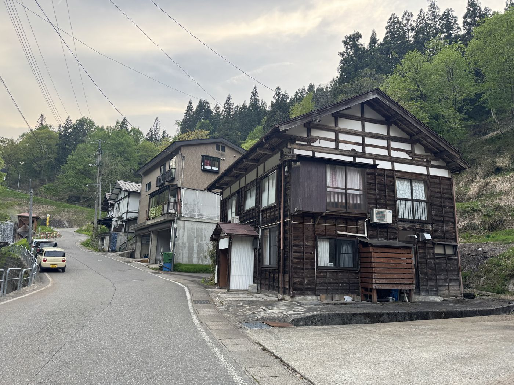
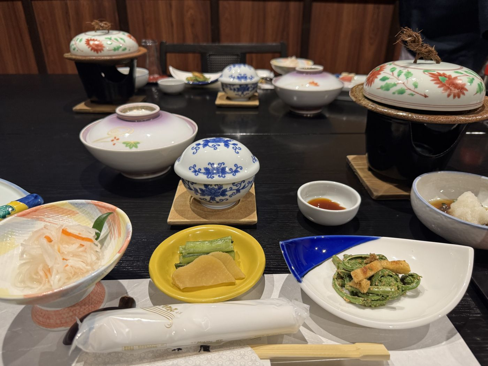
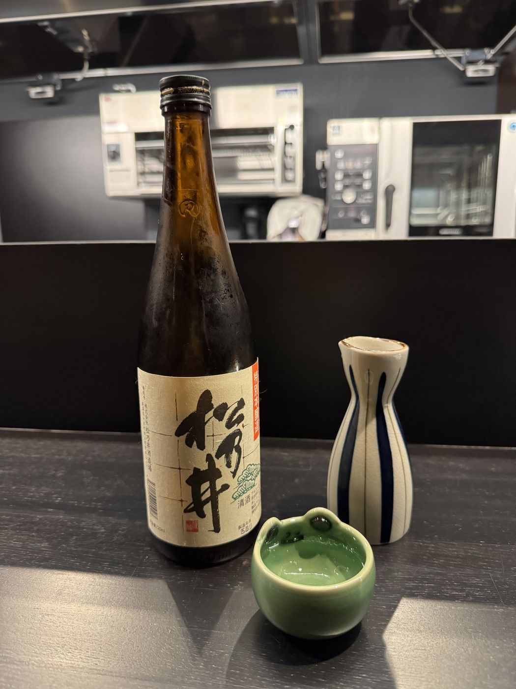

Day 1 · Thu, May 15
Tokyo Matsunoyama Onsen
~296 km
The Ninja Tours team guided us out of Tokyo to the expressway. The scenic Route 292 from Kusatsu to Yamanouchi through Joshin’etsu Kogen National Park was closed, and after getting a little lost, the alternate Route 112 turned out to be spectacular.
Izumiya at Matsunoyama Onsen: salty natural hot-spring water, dinner, and a modern bar.







Overnight
Izumiya, Matsunoyama Onsen